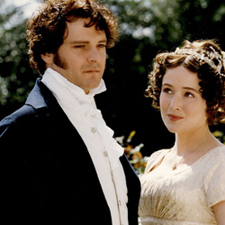
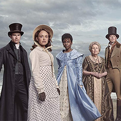

TV Adaptations and Affiliated Shows



Pride and Prejudice
Director: Simon Langton
Screenplay: Andrew Davies
Release Date: 24 September - 26 November 1995 (BBC One, UK)
Genre: Period Drama / Romance
The 1995 BBC adaptation of Pride and Prejudice is one of the most acclaimed versions of Jane Austen’s beloved novel. Written by Andrew Davies and starring Colin Firth and Jennifer Ehle, this six-part series is praised for its faithful adaptation, attention to period detail, and the depth it gives to both major and minor characters. Unlike the 2005 film, the series has time to fully explore subplots and social nuances, making it a favorite for Austen purists and period drama enthusiasts alike.
Main Cast
- Jennifer Ehle as Elizabeth Bennet
- Colin Firth as Mr. Darcy
- Susannah Harker as Jane Bennet
- Crispin Bonham-Carter as Charles Bingley
- Julia Sawalha as Lydia Bennet
- Adrian Lukis as George Wickham
Sanditon
Creator/Developers: Andrew Davies (adapted from Jane Austens unfinished novel)
Network: ITV (UK), PBS Masterpiece (US)
Release Date: 2019
Genre: Period Drama / Romance
Sanditon (2019) is a British period drama based on Jane Austen’s unfinished final novel, adapted and expanded by Andrew Davies, who also adapted the 1995 Pride and Prejudice. The series brings Austen’s story of ambition, social mobility, and romance to life, filling in gaps left by her incomplete manuscript.
Set in the seaside town of Sanditon, the series follows the arrival of Charlotte Heywood, a young, independent-minded visitor from the countryside, and her interactions with the town’s eccentric residents, ambitious developers, and wealthy newcomers. The series blends romance, comedy, and social critique, while taking creative liberties to complete Austen’s narrative.
Main Cast
- Rose Williams as Charlotte Heywood
- Theo James as Sidney Parker
- Kristoffer Polaha as Tom Parker
- Anne Reid as Lady Denham
- Kathy Kiera Clarke as Mrs. Griffiths
- Mark Stanley as Edward Denham
Death Comes to Pemberley
Director: Daniel Percival
Screenplay: Juliette Towhidi (based on the novel by P.D James)
Release Date: 2013
Genre: Period Drama / mystery / crime
Death Comes to Pemberley is a two-part British TV drama based on the 2011 novel by P.D. James, which imagines a murder mystery set in the world of Jane Austen’s Pride and Prejudice. The story picks up six years after the marriage of Elizabeth Bennet and Mr. Darcy, presenting a fusion of Austen’s Regency setting with a whodunit plot. While the characters and social milieu are directly drawn from Austen’s novel, the murder mystery is entirely P.D. James’ invention.
Main Cast
- Matthew Rhys as Mr. Darcy
- Anna Maxwell Martin as Elizabeth Darcy
- Rupert Graves as Colonel Fitzwilliam
- Danae Kara as Lydia Wickham
- John Simm as George Wickham